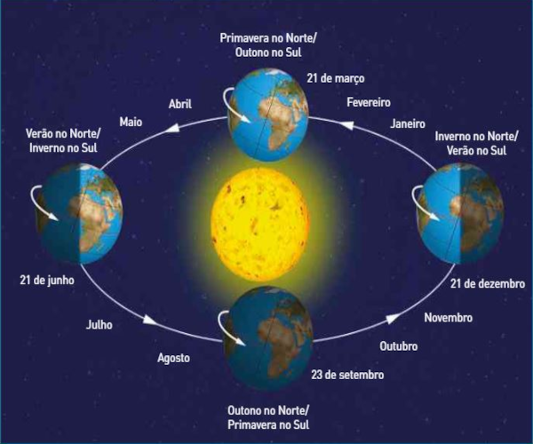

Chamamos de estação do ano cada uma das quatro subdivisões do ano baseadas em padrões climáticos. São elas: primavera, verão, outono e inverno.
As estações do ano ocorrem devido à inclinação da terra em relação ao sol. Podemos dizer então que as estações são ocasionadas pelo eixo de rotação da Terra, juntamente com o movimento da mesma em torno do sol, que dura um ano e recebe o nome de translação. Veja a seguir as características de cada uma delas.